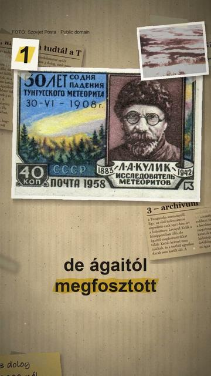

Megnézem a YouTube-on3 dolog, amit nem tudtál a Tunguszka-eseményről
Röviden: 1908. június 30-án, helyi idő szerint reggel negyed nyolc körül Szibéria felett, a Tunguszka vidékén egy kozmikus test a levegőben felrobbant.
1908. június 30-án, helyi idő szerint reggel negyed nyolc körül Szibéria felett, a Tunguszka vidékén egy kozmikus test a levegőben felrobbant. A NASA szerint a pusztítás egy pillangó alakú, 830 négyzetmérföldes (kb. 2150 km²) területet érintett, ahol fák milliói dőltek ki. Leonyid Kulik 1921-ben még nem jutott el a helyszínre, az első tudományos expedíció csak 1927-ben érte el; a középpontban álló, de ágaitól és kérgétől megfosztott fákat talált. Becsapódási kráter nincs, a testből egyetlen darab sem került elő, a később talált mikrorészecskéket pedig nem lehetett egyértelműen a robbanáshoz kötni. Az erő becslései 3 és 20 megatonna között szórnak; egy 2018-as NASA-műhely legvalószínűbb modelljei 10–20 megatonnát és nagyjából 10 km-es robbanási magasságot adtak, kőzetkisbolygó esetén 50–80 méteres átmérővel. Sokáig vitatták, hogy üstökös okozta-e; a NASA szerint ma a kutatók többsége kisbolygóra gondol. 2016 óta június 30. a kisbolygók nemzetközi napja.
Az összes rész forrásokkal: https://valoban.pages.dev/
Források
- NASA: 115 Years Ago: The Tunguska Asteroid Impact Event
- NASA/TM–2018–220174, Morrison: Tunguska Workshop
2 forrás · Hogyan ellenőrzünk?
Hibát találtál? Írd meg nekünk, megnézzük.
Képek és kreditek
• kidőlt, megégett fák (Kulik-expedíció, 1929) – Leonyid Kulik expedíciója, Public domain (https://creativecommons.org/publicdomain/mark/1.0/) https://commons.wikimedia.org/?curid=158812513
• a robbanás helye műholdképen (NASA, 2024) – NASA Earth Observatory, Public domain (https://creativecommons.org/publicdomain/mark/1.0/) https://commons.wikimedia.org/?curid=196588330
• Leonyid Kulik ásványkutató – Jevgenyij Krinov, Public domain (https://creativecommons.org/publicdomain/mark/1.0/) https://commons.wikimedia.org/?curid=3037057
• a tunguszkai láp (Kulik-expedíció, 1927–30) – ismeretlen (Vokrug Szveta, 1931), Public domain (https://creativecommons.org/publicdomain/mark/1.0/) https://commons.wikimedia.org/?curid=22558783
• emlékbélyeg Kulik arcképével, 1958 – Szovjet Posta, Public domain (https://creativecommons.org/publicdomain/mark/1.0/) https://commons.wikimedia.org/?curid=12784843
• megégett fatörzs-szelet múzeumban – Artem Svetlov, CC BY 4.0 (https://creativecommons.org/licenses/by/4.0/) https://commons.wikimedia.org/?curid=159651234
• a helyszín vázlattérképe (Vokrug Szveta, 1931) – ismeretlen (Vokrug Szveta, 1931), Public domain (https://creativecommons.org/publicdomain/mark/1.0/) https://commons.wikimedia.org/?curid=22556561
A képek módosítva: 9:16-ra kivágva, átméretezve, kameramozgással, ráégetett felirattal.